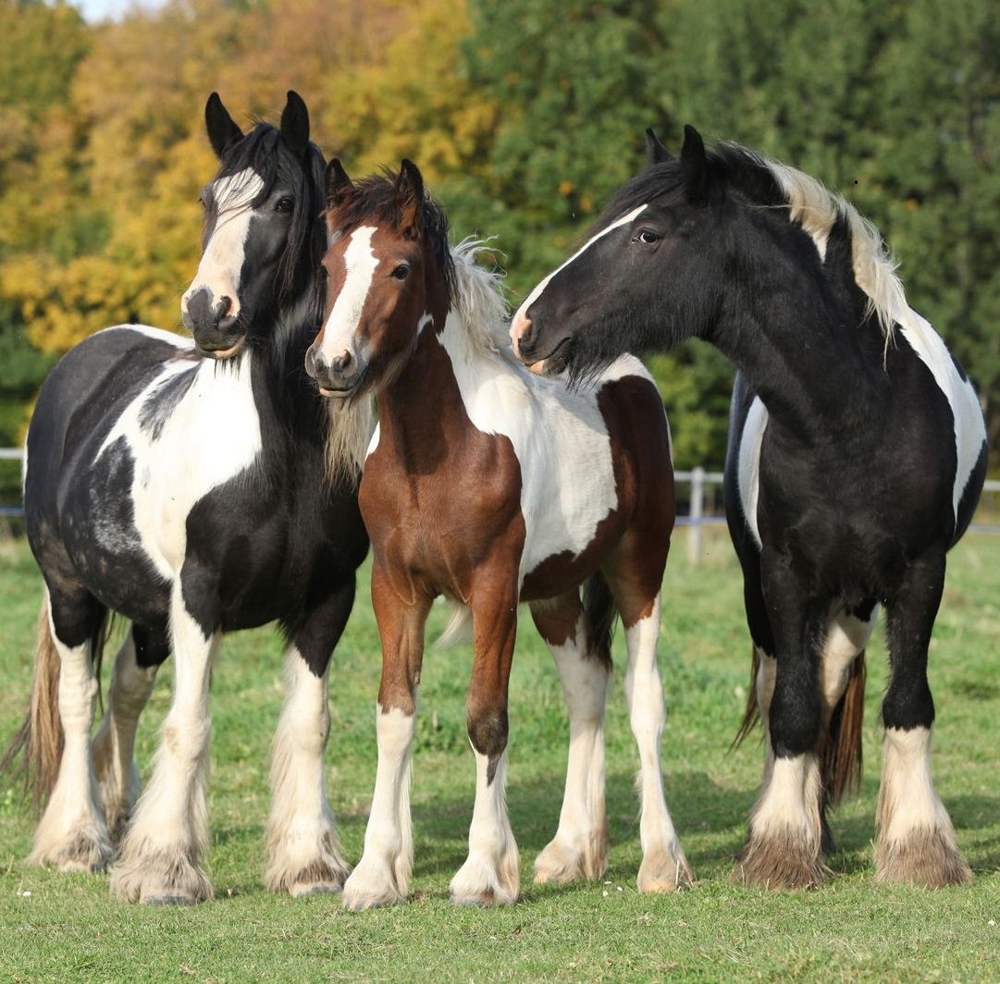
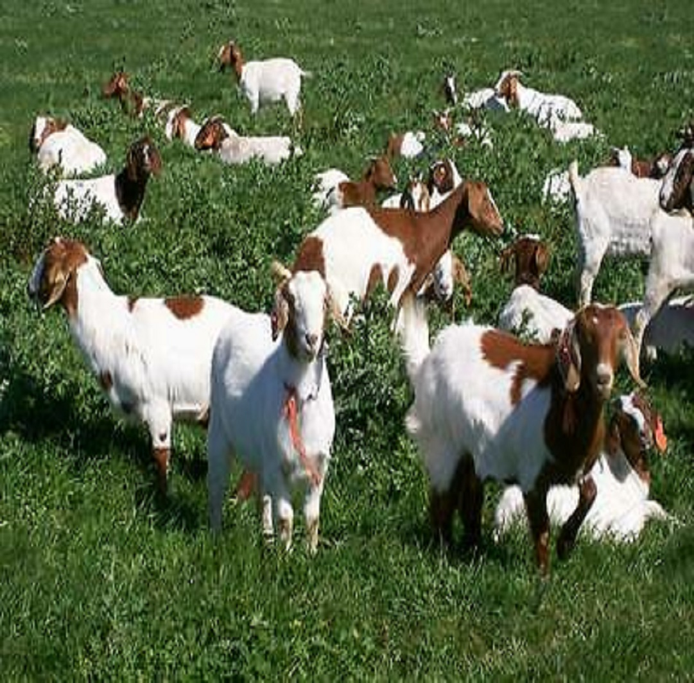
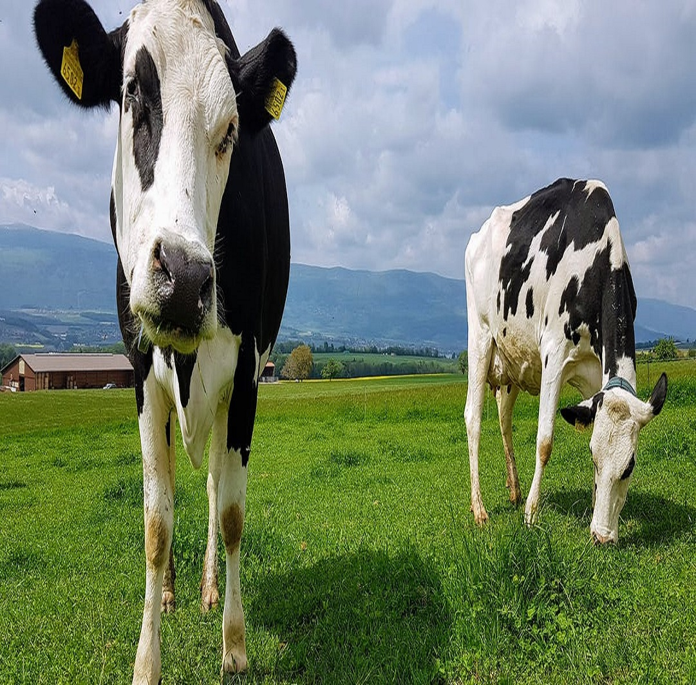
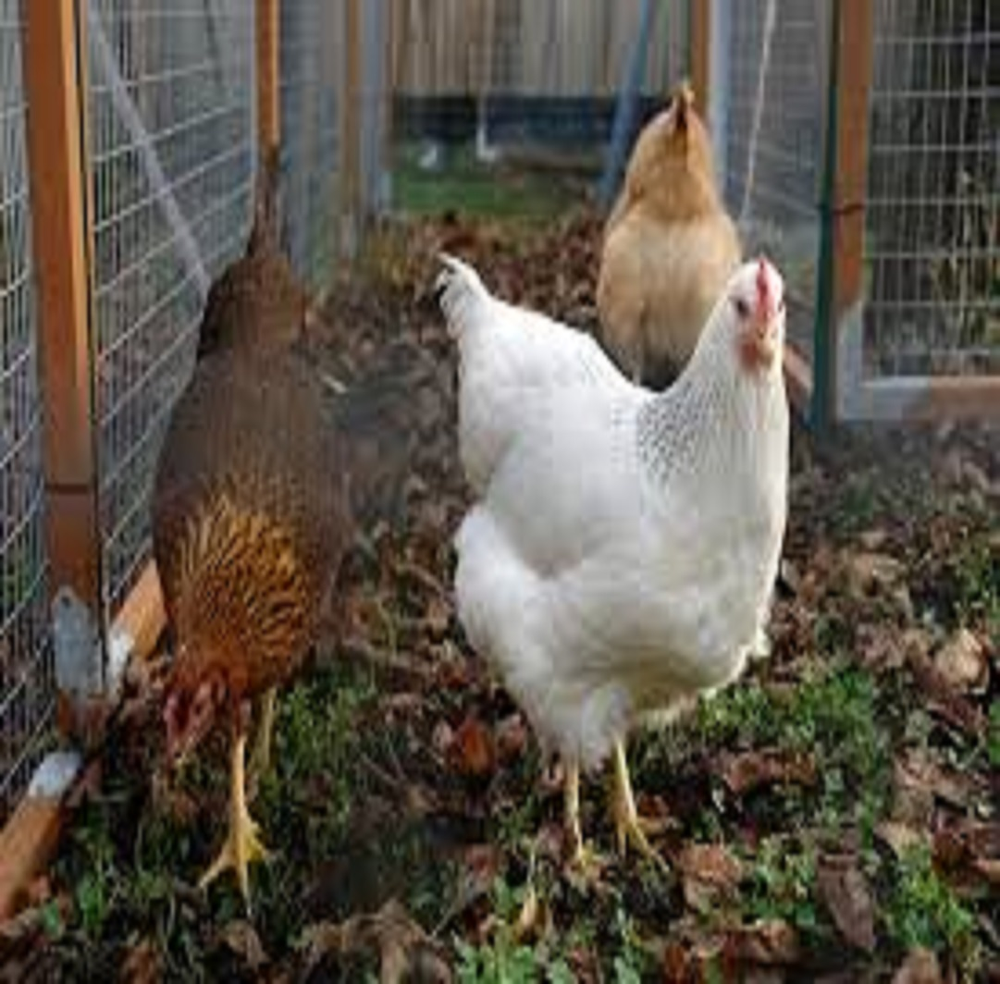
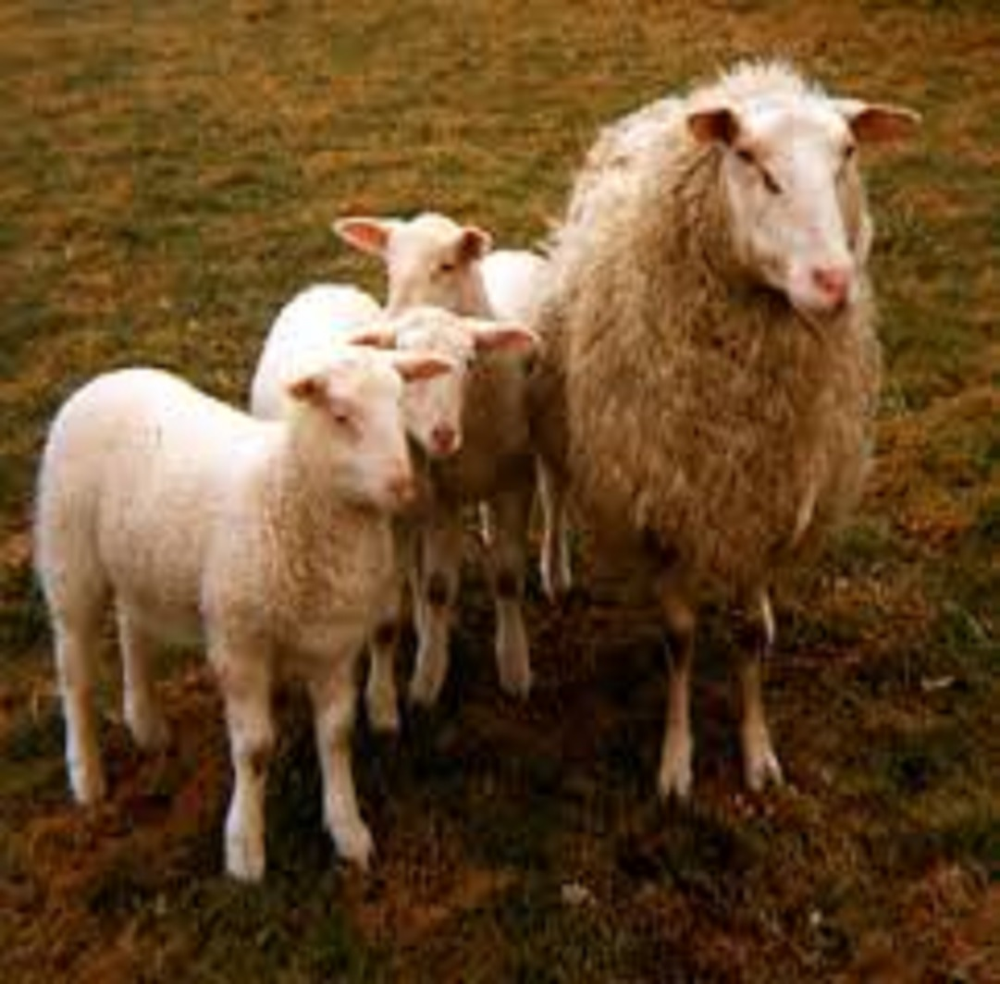

HORSE
Average Body Weight(kg) - 640
Average Height(cm) - 158
Suitable Climate(celsius) - 8-36
Average Weight during breeding(kg) - 661.73
Life Span(years) - 25-30

BULL
Average Body Weight(kg) - 314.18
Average Height(cm) - 170
Suitable Climate(celsius) - 3-31
Average Weight during breeding(kg) - 336
Life Span(years) - 10-12

GOAT
Average Body Weight(kg) - 17.71
Average Height(cm) - 61
Suitable Climate(celsius) - 7-24
Average Weight during breeding(kg) - 21.47
Life Span(years) - 15-18

COW
Average Body Weight(kg) - 141.4
Average Height(cm) - 175
Suitable Climate(celsius) - 12-33
Average Weight during breeding(kg) - 169.64
Life Span(years) - 5-6

POULTRY
Average Body Weight(kg) - 2.25
Average Height(cm) - 55
Suitable Climate(celsius) - 15-30
Average Weight during breeding(kg) - 3.12
Life Span(years) - 5-10

SHEEP
Average Body Weight(kg) - 22.72
Average Height(cm) - 117
Suitable Climate(celsius) - 5-25
Average Weight during breeding(kg) - 28.53
Life Span(years) - 10-12